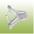

Cijepljenje ili kalemljenje lubenica treba raditi iz dva osnovna razloga:
1.Bolesti fuzarioznog uvenuća naročito zbog učestale proizvodnje na istoj površini, jer je tlo u pravilu zaraženo uzročnikom ove opasne bolesti.
2. Drugi razlog je dobijanje snažnijeg korijenovog sistema koji bolje podnosi niže temperature tla i sušu, te bolje koristi vodu i hranjive tvari. Postižu se znatno veći prinosi lubenica, krupniji plodovi i ranije dozrijevanje.
Za uspjeh cijepljenja – kalemljenja važno je izabrati najbolju podlogu. Za lubenice se najčešće koristi podloga tikve vrg (Legenaria vulgaris), a za dinju podloga je muškatna tikva (Cucurbita Moshata).
Postupak cijepljenja kod lubenica i dinja je jednak.
Trgovačke sjemenarske kuće u pravilu preporučuju hibridne podloge firmi koje zastupaju. Međutim najbolje je ipak slijediti iskustva iz višegodišnje prakse velikog broja korisnika koji postižu najbolje rezultate s podlogom tikve vrg.
Iskustva iz dugogodišnje prakse najvećih proizvođača cijepljenih – kalemljenih presadnica u Europi i kod nas upućuju na izbor spojnica s kojima se postiže najveći prijem.
Rezultati su potvrdili da se najveći prijem postiže sa slijedećim tipovima spojnica. Mi vam takve spojnice nudimo na izbor između plastičnih, biorazgradivih za jednokratnu upotrebu i silikonskih za višekratnu upotrebu.
Vi odlučite koje su za vas bolje riješenje.
| Slika | Naziv | Veličina | Dimenzija | Prodajno pakiranje |
|---|---|---|---|---|
|  | WM-10 | 2,5 mm | 27x20x12 mm | 9.000 |
| WM-10 | 2,5 mm | 27x20x12 mm | 1.000 | |
| WM-10 | 2,5 mm | 27x20x12 mm | 500 | |
| WM-10 | 2,5 mm | 27x20x12 mm | 100 | |
| WM-11 | 2,0 mm | 27x20x12 mm | 9.000 | |
| WM-11 | 2,0 mm | 27x20x12 mm | 1.000 | |
| WM-11 | 2,0 mm | 27x20x12 mm | 500 | |
| WM-11 | 2,0 mm | 27x20x12 mm | 100 |
| Slika | Naziv | Veličina | Dimenzija | Prodajno pakiranje |
|---|---|---|---|---|
| MOLSIL | 2,5 mm | 6x12x12 mm | 20.000 | |
| MOLSIL | 2,5 mm | 6x12x12 mm | 1.000 | |
| MOLSIL | 2,5 mm | 6x12x12 mm | 500 | |
| MOLSIL | 2,5 mm | 6x12x12 mm | 100 | |
| MOLSIL | 2,1 mm | 6x11x12 mm | 20.000 | |
| MOLSIL | 2,1 mm | 6x11x12 mm | 1.000 | |
| MOLSIL | 2,1 mm | 6x11x12 mm | 500 | |
| MOLSIL | 2,1 mm | 6x11x12 mm | 100 |
Copyright Nibon Pak Sva prava zadržana. Development & SEO Web Vortex